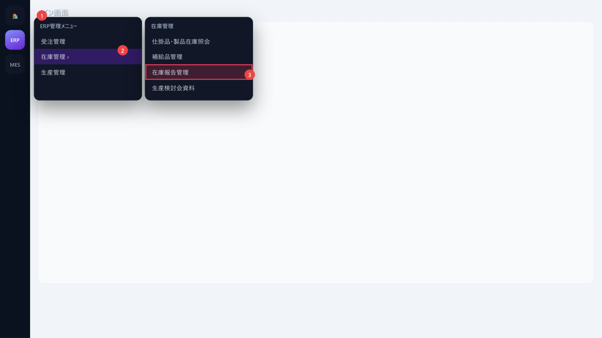
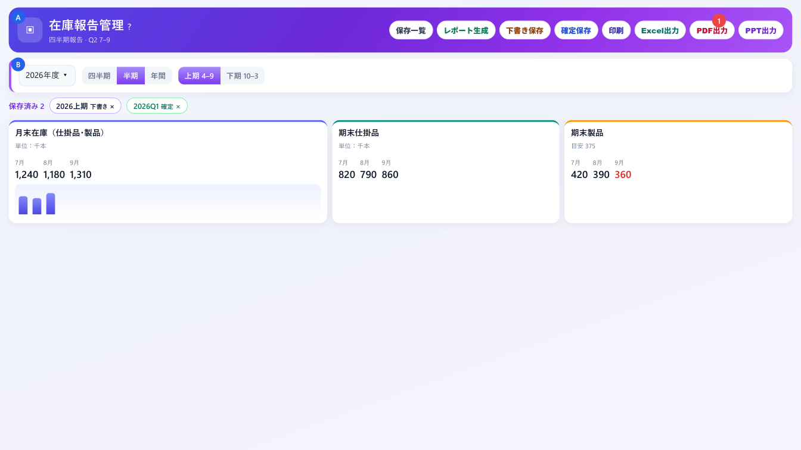
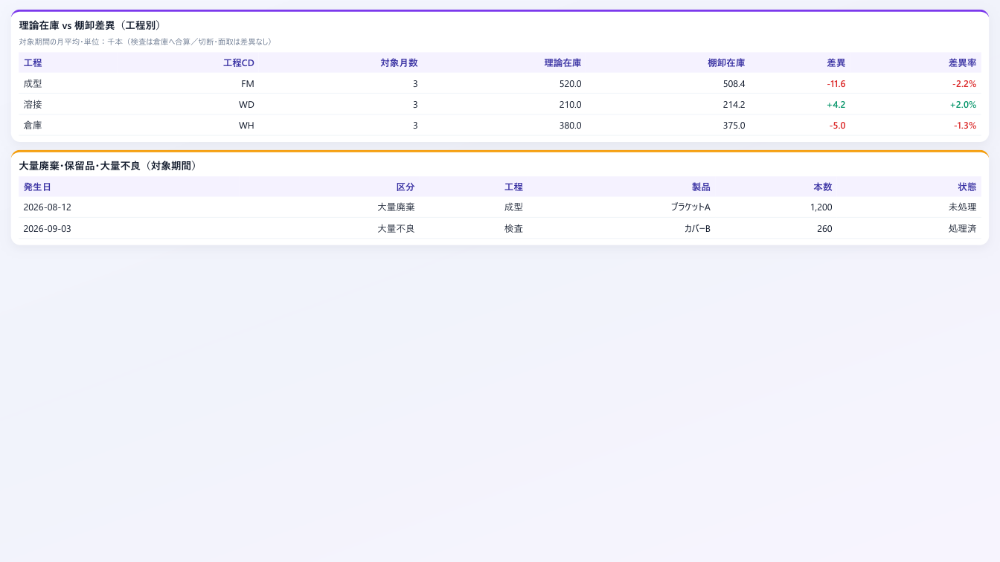
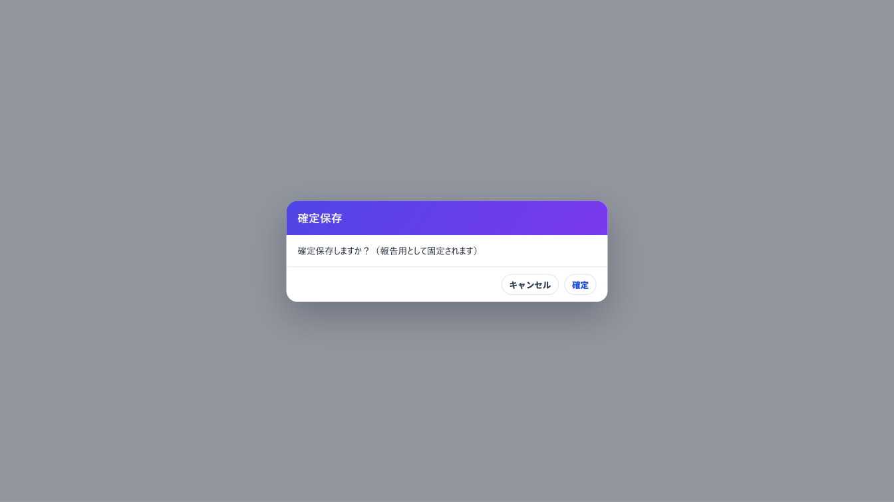
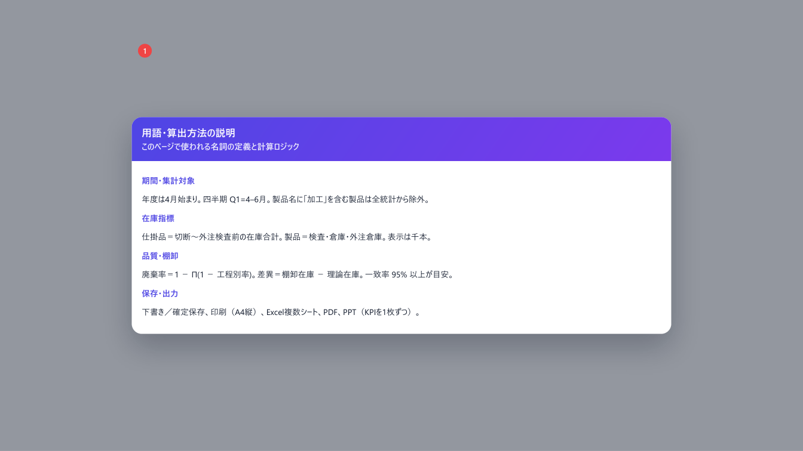

四半期・半期・年間の在庫・廃棄・棚卸差異をまとめ、保存して報告する
「在庫報告管理」は、指定した会計年度の四半期・半期・年間について、月末在庫・廃棄・棚卸差異・大量廃棄をまとめて見る画面です。集計結果は下書きまたは確定として保存し、印刷・Excel・PDF・PPT で報告に使います。
| できること | 説明 |
|---|---|
| 生成 | 年度と期間を選び、その時点の集計スナップショットを作る |
| 確認 | 月末在庫、期末仕掛品・製品、廃棄率・廃棄本数、棚卸一致率、工程別差異、大量廃棄明細 |
| 保存 | 下書き、または報告用の確定。チップから再読込・削除 |
| 出力 | A4 縦の印刷、複数シートの Excel、画面構成の PDF、KPI を 1 枚ずつにした PPT |
| 用語 | 意味 |
|---|---|
| 年度 | 4 月始まり。2026 年度は 2026-04〜2027-03 |
| 四半期 | Q1=4–6、Q2=7–9、Q3=10–12、Q4=1–3 |
| 半期／年間 | 上期=4–9、下期=10–3、年間=4–3 の 12 か月 |
| 千本 | 在庫・廃棄本数の画面表示単位 |
| 仕掛品 | 切断・面取・成型・メッキ・外注メッキ・溶接・外注溶接・溶接前検査・外注支給前・外注検査前の在庫合計 |
| 製品 | 検査・倉庫・外注倉庫の在庫合計。棚卸の製品側は製品 CD 末尾が「1」の行のみ |
| 廃棄率 | 主ラインの連乗損失率。1 − Π(1 − 工程別率)。目安 1.5% |
| 棚卸差異 | 棚卸在庫 − 理論在庫。期間の月平均。プラスは実物が多い |
| 一致率 | 理論と棚卸が一致した明細の割合。95% 以上が目安 |

/erp/inventory/report です。タイトル横の 操作説明 から本書を開けます。隣の ? は用語・算出方法です。


| No | エリア | 説明 |
|---|---|---|
| A | ヘッダー | タイトル、報告種別、保存一覧・生成・保存・印刷・出力 |
| B | 期間バー | 年度、四半期／半期／年間、Q または上期・下期 |
| C | 保存済み | その年度の保存チップ。クリックで読込、× で削除 |
| D | KPI | 月末在庫、期末仕掛品、期末製品、廃棄率、廃棄本数、棚卸一致率 |
| E | 差異・明細 | 工程別の理論 vs 棚卸、大量廃棄などの表 |
| ボタン | 動き | 参照 |
|---|---|---|
| 保存一覧 | 選択年度の保存済み一覧を読み直す | 第 8 章 |
| レポート生成 | 期間の集計を実行する | 第 5 章 |
| 下書き保存 | いまの結果を下書きとして保存（生成後のみ） | 第 8 章 |
| 確定保存 | 確認後、報告用として固定保存 | 第 8 章 |
| 印刷 | A4 縦の報告書をブラウザ印刷 | 第 9 章 |
| Excel出力 | 複数シートの .xlsx | 第 9 章 |
| PDF出力 | 画面構成の PDF を保存 | 第 9 章 |
| PPT出力 | 表紙付きで KPI を 1 枚ずつスライド化 | 第 9 章 |
ヘッダーの副題は「四半期報告 · Q2 7–9」のように、選んだ種別と期間に変わります。各月の数値は、その月の生産集計が存在する最終日時点です。
| カード | 見方 |
|---|---|
| 月末在庫（仕掛品・製品） | 月ごとの合計と、仕掛／製品の内訳。単位は千本。グラフ付き |
| 期末仕掛品 | 月ごとの仕掛品在庫（千本） |
| 期末製品 | 月ごとの製品在庫。目安 375 千本の破線 |
| 廃棄率 | 連乗損失率（%）。目安 1.5% の破線。超過月は注意 |
| 廃棄本数 | 全工程の不良＋廃棄（千本） |
| 棚卸一致率 | % と、差異の絶対値合計 |
マイナスの数量は赤で表示します。前期間比は、同じ報告単位の直前期間の末月と比べます（四半期は前 Q、半期は前半期、年間は前年度）。
対象期間の月平均を工程別に出します。単位は千本。検査は倉庫へ合算し、切断・面取は差異なしとして扱います。
| 列 | 内容 |
|---|---|
| 理論在庫 | 生産集計から計算上あるべき在庫 |
| 棚卸在庫 | 実地棚卸で数えた在庫 |
| 差異 | 棚卸 − 理論。プラスは実物が多い |
| 差異率 | 差異 ÷ 理論 × 100。理論が 0 のときは「—」 |
「大量廃棄・保留品管理」の登録に加え、生産実績で工程別不良が 200 本を超える大量不良を自動で併記します。列は発生日、区分、工程、製品、本数（本）、状態です。未処理件数は手動登録の未処理だけが対象です。

保存一覧 は、選んでいる年度の保存を読み直します。チップをクリックすると「保存済みレポートを読み込みました」となり、年度・期間・内容がその保存に戻ります。× では「保存レポート削除」の確認が出ます。削除は取り消せません。表示中の保存を消すと、画面のレポートも空になります。
いずれも生成後だけ使えます。未生成のときは「先にレポートを生成してください」です。
| 出力 | 内容 |
|---|---|
| 印刷 | A4 縦。表紙・KPI・月別表・グラフ・差異・大量廃棄明細 |
| Excel出力 | 月末在庫、月別 KPI、大量廃棄区分、棚卸差異、明細。ファイル名例 在庫報告_2026上期_….xlsx |
| PDF出力 | 画面の KPI・グラフ・差異表・明細を PDF で保存 |
| PPT出力 | 生産管理部・在庫報告の表紙のあと、KPI カードを 1 枚ずつ。画面のグラフを埋め込む |
成功メッセージは「Excelを出力しました」「PDFを出力しました」「PPTを出力しました」です。
タイトル横の ? は、本書とは別の「用語・算出方法の説明」を開きます。期間、在庫、廃棄率、棚卸差異、保存と出力の定義が載っています。

| グループ | 主な内容 |
|---|---|
| 期間・集計対象 | 年度、Q／半期、加工品の除外、月末時点 |
| 在庫指標 | 仕掛品と製品の範囲、前期間比 |
| 品質指標 | 廃棄率の連乗、廃棄本数、目安 1.5% と期末製品 375 千本 |
| 棚卸差異 | 理論、棚卸、差異、差異率、一致率、差異絶対値合計 |
| その他 | 大量廃棄の併記、保存、印刷、Excel、PDF、PPT |
| メッセージ | 意味と対処 |
|---|---|
| 年度・報告期間を選び「レポート生成」を実行してください | まだ生成も読込もしていない。期間を選んで生成する |
| {期間} を生成しました | 生成成功 |
| 生成に失敗しました | 通信または元データ。時間をおいて再実行 |
| 下書き保存しました／確定保存しました | 保存成功。チップを確認 |
| 保存に失敗しました | 再保存。確定の確認をキャンセルした場合は保存されない |
| 保存済みレポートを読み込みました | チップからの読込成功 |
| 保存レポートを削除しました | 削除成功。取り消せない |
| 先にレポートを生成してください | 出力前に生成または保存の読込が必要 |
| Excelを出力しました／PDFを出力しました／PPTを出力しました | ダウンロード成功 |
| Excel出力に失敗しました など | ブラウザのダウンロード許可を確認して再実行 |
| 質問 | 答え |
|---|---|
| Q1 と 4–6 月は同じですか | 同じです。年度の 4 月始まりです |
| 保存一覧が空です | 年度を変えると一覧も変わります。その年度で保存した分だけ出ます |
| ボタンが押せません | 生成前は保存と出力が無効です。先にレポート生成してください |
| 一致率が低いです | 95% 未満は原因調査を推奨します。理論棚卸比較や棚卸登録を確認してください |
| ? と操作説明の違いは | ? は算出の定義。操作説明は本書です |
| 項目 | 内容 |
|---|---|
| 文書名 | 在庫報告管理 操作説明書 |
| 対象 | ERP → 在庫管理 → 在庫報告管理 |
| 画面パス | /erp/inventory/report |
| 版数 | 第 1.0 版 |
| 作成日 | 2026年10月13日 |
| スタイル正本 | 月受注管理 操作説明書（order-monthly.pdf）に準拠 |
| 言語 | 日本語 |
| 日付 | 版 | 内容 |
|---|---|---|
| 2026-10-13 | 1.0 | 現行画面（四半期・半期・年間、KPI、差異、大量廃棄、下書き／確定、印刷・Excel・PDF・PPT、用語ヘルプ）に合わせて新規作成 |
以上。ボタン名は 2026年10月13日時点の画面表示と一致します。